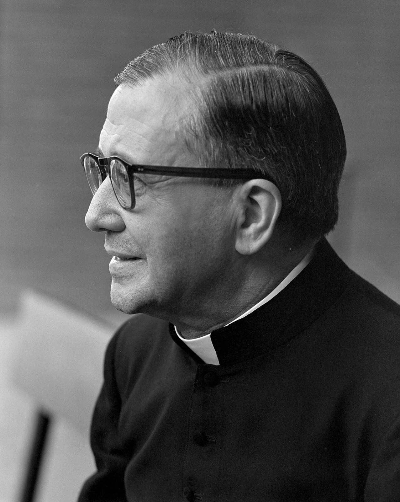
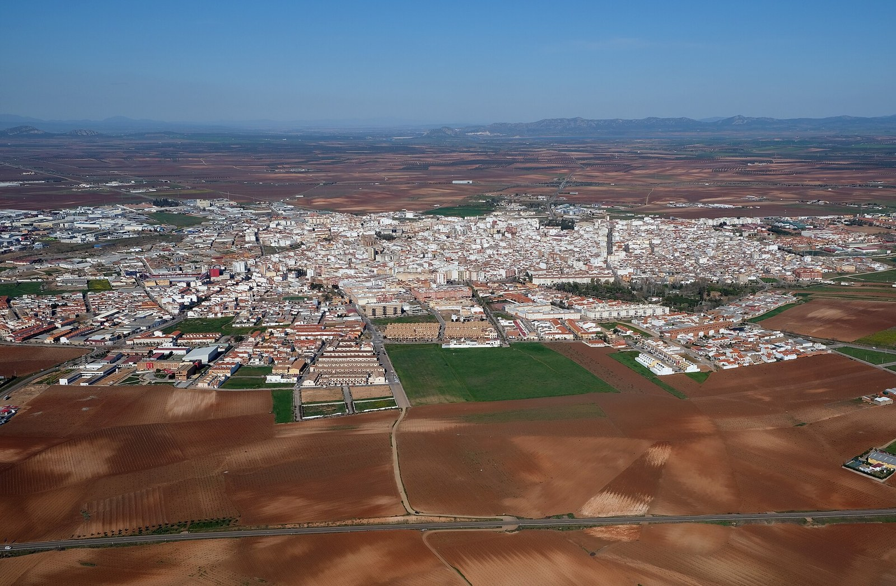
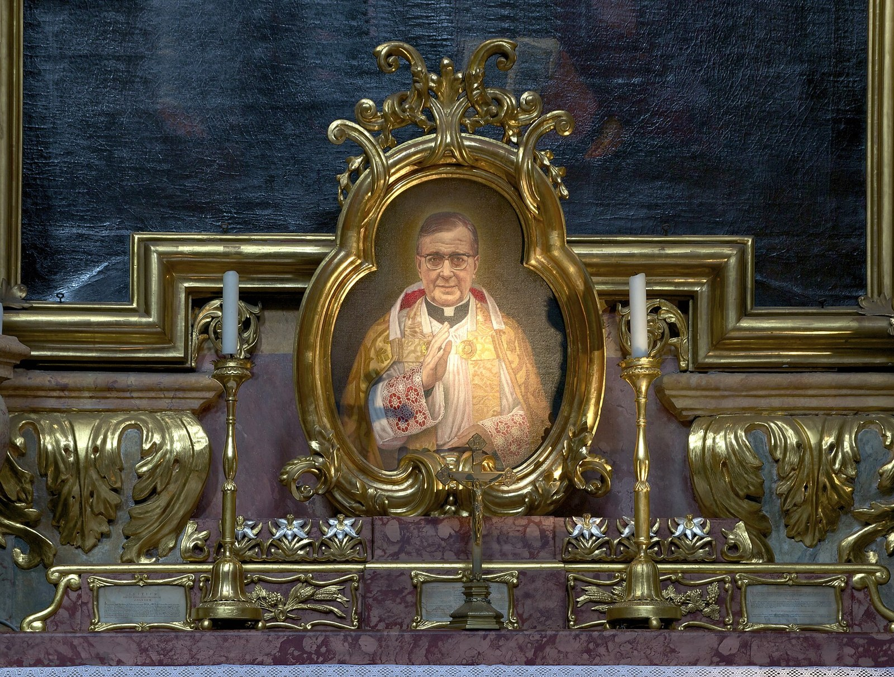
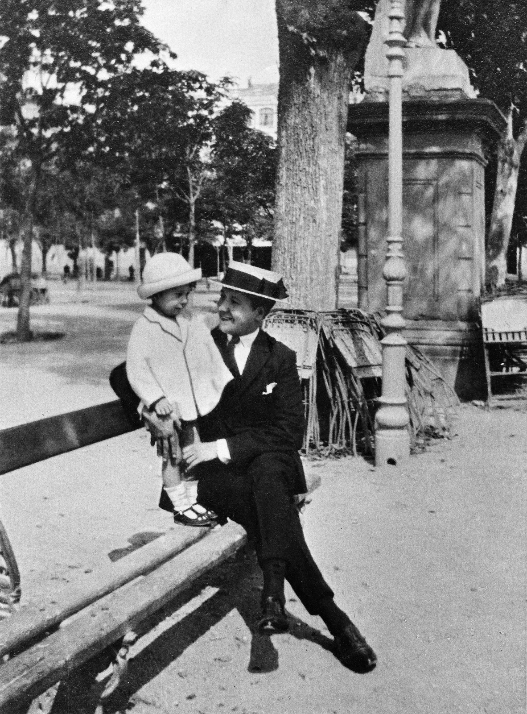
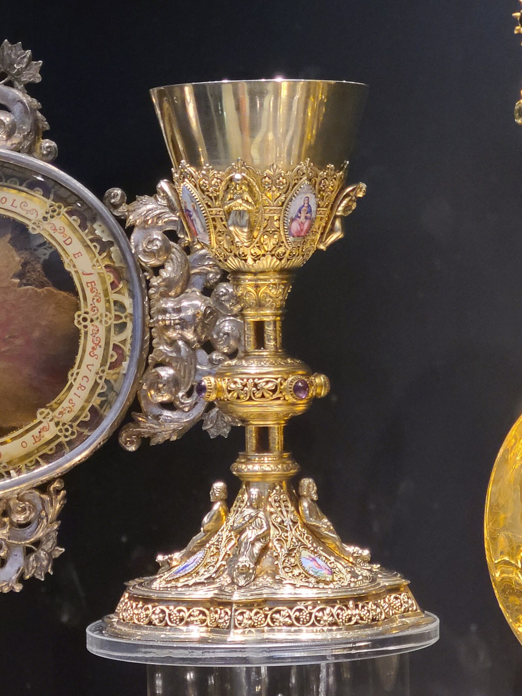

Oficina de Información de la Prelatura del Opus Dei en Españ… · Wikimedia Commons · CC BY-SA 2.0Manuel Nevado: as mãos do cirurgião
Reconhecido pela Santa Igreja CatólicaO RELATO
Manuel Nevado Rey nasceu na Espanha em 1932. Especialista em traumatologia, passou a operar com frequência a partir de 1956 e, por quase quinze anos, tratou fraturas e outras lesões com exposição constante aos raios X. Morava em Almendralejo, na província de Badajoz. Trabalhou num pequeno hospital que ele mesmo fundou, em centros da previdência social e em consultório particular.
Os primeiros sinais apareceram por volta de 1962, ano em que se casou: queda de pelos e vermelhidão no dorso da mão esquerda. As lesões avançaram. Em 1984, ele já só fazia cirurgias menores. No verão de 1992, deixou de operar. O quadro foi descrito como cancerização de radiodermite crônica grave, em terceiro estágio, em fase de irreversibilidade, com prognóstico sem esperança de cura. Ele não fez nenhum tratamento.
No começo de novembro de 1992, no Ministério da Agricultura, Nevado encontrou o engenheiro agrônomo Luis Eugenio Bernardo. O engenheiro viu as mãos do médico e lhe ofereceu um santinho de Josemaria Escrivá, fundador do Opus Dei, beatificado em 17 de maio daquele ano. Poucos dias depois, Nevado viajou com a esposa a Viena para um congresso médico. Encontrou santinhos do beato em várias igrejas da cidade. "Isso me impressionou e me animou a rezar mais pela minha cura", explicou depois.
Segundo o próprio testemunho, assinado em Almendralejo em 30 de junho de 1993, nenhum remédio foi usado. Em aproximadamente quinze dias, as placas e as úlceras dos dedos desapareceram. Em janeiro de 1993, ele já tinha voltado a operar.
O processo canônico sobre a cura foi instruído na Arquidiocese de Badajoz e concluído em 1994. Exames de 1992, 1994 e 1997 registraram o desaparecimento das lesões. Em 10 de julho de 1997, a comissão médica da Congregação para as Causas dos Santos declarou, por unanimidade, que a cura foi muito rápida, completa, duradoura e cientificamente inexplicável. Os consultores teólogos deram parecer unânime em 9 de janeiro de 1998. Os cardeais e bispos da Congregação confirmaram as conclusões em 21 de setembro de 2001.
Em 20 de dezembro de 2001, João Paulo II aprovou o decreto sobre o milagre. Em 6 de outubro de 2002, o Papa canonizou Josemaria Escrivá em Roma. Na homilia, disse que o trabalho e qualquer outra atividade, feitos com a ajuda da graça, se transformam em meios de santificação cotidiana. Os restos de São Josemaria estão hoje na Igreja Prelatícia de Santa Maria della Pace, no viale Bruno Buozzi, em Roma.
O QUE A SANTA IGREJA CATÓLICA DECIDIU
Consultores teólogos aprovaram o caso por unanimidade em 9 de janeiro de 1998; a sessão ordinária de cardeais e bispos da Congregação para as Causas dos Santos confirmou as conclusões em 21 de setembro de 2001. Em 20 de dezembro de 2001, João Paulo II aprovou o decreto sobre o milagre. O Papa canonizou São Josemaria Escrivá em Roma, em 6 de outubro de 2002.
FOTOS













Imagens do Wikimedia Commons, em domínio público ou Creative Commons, com crédito ao autor.
COMO VISITAR
Igreja Prelatícia de Santa Maria della Pace
Roma, Itália
FONTES
- Santa Sé — The Miracle Approved for the Canonization of Josemaría Escrivá, set 2002
- Santa Sé — Homilia de João Paulo II na canonização de Josemaria Escrivá, 6 out 2002
- Opus Dei — Aprovado um milagre atribuído ao Bem-aventurado Josemaria Escrivá, 27 dez 2001
- Opus Dei — Testemunho do Dr. Manuel Nevado Rey, Almendralejo, 30 jun 1993
VER O POST NO INSTAGRAMTODOS OS MILAGRES NO MAPA